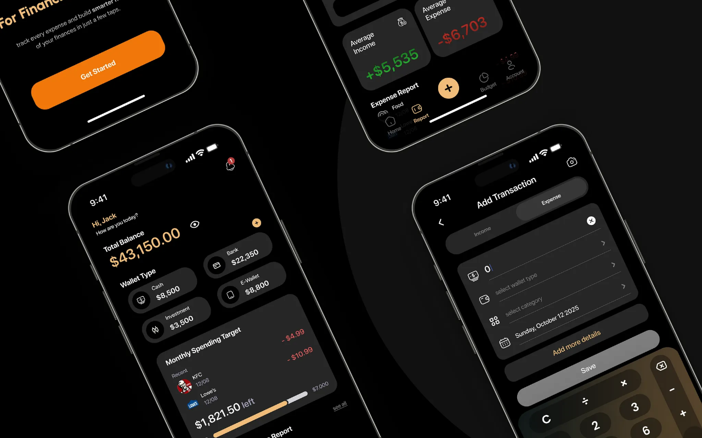

Role
UX Research & UI Design
A personal-finance app built end-to-end — from user research to high-fidelity UI. The Income & Expense Report turns a month of messy transactions into one calm, color-coded view of where the money actually goes.

This was a solo entry for a national UI/UX competition. There was no existing product to lean on — I owned the whole arc: research, problem framing, information architecture, wireframes, and the final high-fidelity UI.
The brief was open: design a mobile app that helps everyday people manage money without feeling judged by it. I narrowed that into one job to do exceptionally well — making monthly cash flow instantly understandable.
Interviews + a survey of 30 young earners. Mapped how they track money today and where it breaks down.
Synthesized findings into personas, a job-to-be-done, and a tight IA. Cut every feature that didn't serve clarity.
Low-fi wireframes & flows. Tested the report layout — color-coding categories beat plain lists every time.
High-fidelity screens, a small design system (color, type, components), and a clickable prototype for judging.
people couldn't say where most of their money went last month — tracking apps felt like spreadsheets, so they quit.
was the attention budget. If a monthly summary couldn't be grasped in a glance, it wasn't worth opening.
was the fastest signal. Category colors + a single hero number outperformed every list-based layout in testing.
Key screens from the final high-fidelity UI. Replace these placeholders with your own exported frames anytime — drop a screenshot into each slot.
The judges singled out the report screen's clarity — proof that a single, well-framed problem solved with restraint beats a feature-stuffed product. The project remains my reference for how research, focus, and visual craft compound into something that wins.